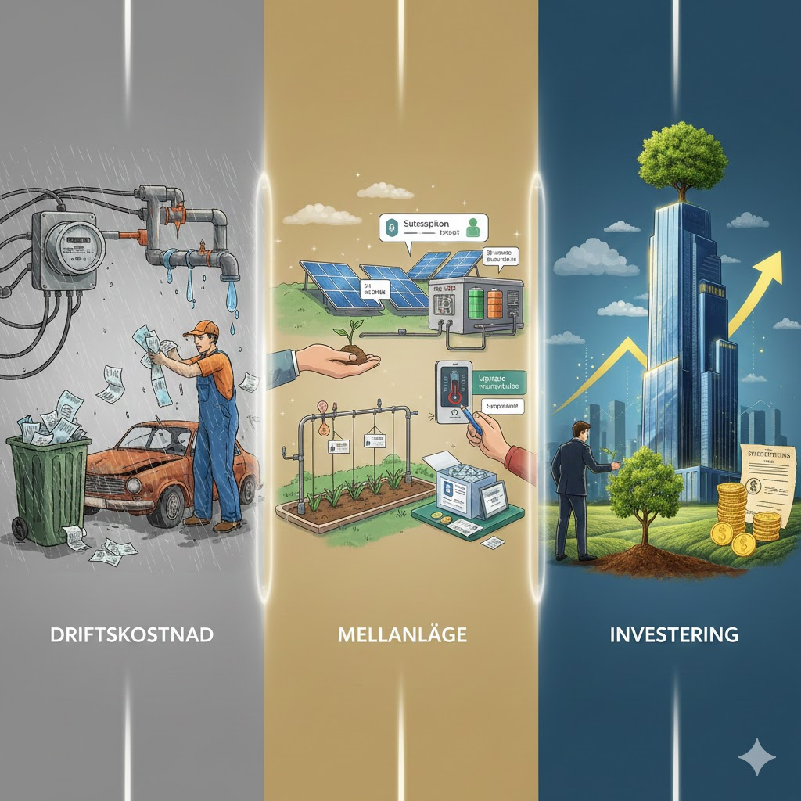
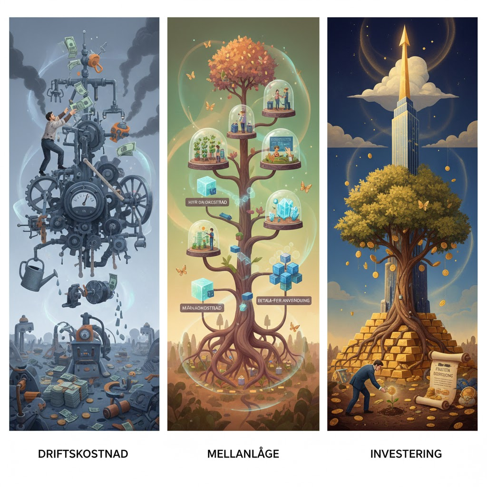
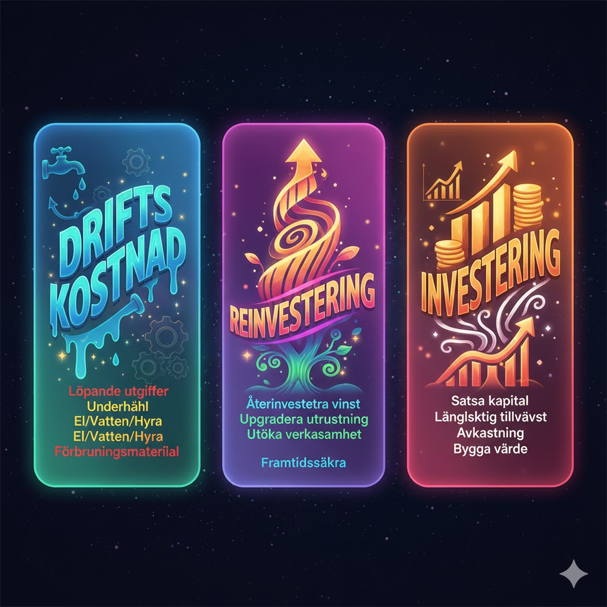

Quiz: Investering, Reinvestering eller Drift?
En fördjupning med fokus på reinvesteringar och komponentavskrivning
Sida 1 av 5
En fördjupning med fokus på reinvesteringar och komponentavskrivning



Nu är du redo! Testa dina kunskaper om investering, reinvestering och drift! 🎯
Filstruktur: Detta quiz är byggt med separation of concerns-principen, där HTML, CSS och JavaScript är uppdelade i separata filer:
Att dela upp kod i separata filer ger flera fördelar:
Skapad: 2025-11-27 med AI-assistans (Claude Opus 4.5)
Baserad på: Bloggtexter om investering, reinvestering och drift samt RKR:s rekommendationer
Fokus: Detta quiz fokuserar särskilt på reinvesteringar och komponentavskrivning - begrepp som är centrala för att förstå gränsdragningen mot driftskostnader.
Quiz: Investering, Reinvestering eller Drift? - Fokus på reinvesteringar
Frågor och fördjupade förklaringar baserade på (i Harvard-format):
Detta quiz är skapat för att fördjupa förståelsen för gränsdragningen mellan investering, reinvestering och drift i kommunal redovisning.
🔄 Fokus på reinvesteringar: Medan tidigare material fokuserat på den grundläggande skillnaden mellan drift och investering, går detta quiz djupare och fokuserar särskilt på reinvesteringar och hur komponentavskrivning påverkar klassificeringen.
📖 Rekommenderad förkunskap: Vi rekommenderar att du först läser bloggtexten "Drift eller investering?" och testar det tidigare quizet "Drift eller Investering?" för en grundläggande introduktion till ämnet.
För fullständig information om investeringsriktlinjer i din kommun, kontakta din ekonomifunktion eller controller.
Läs mer på bloggen: Investering, reinvestering eller drift?